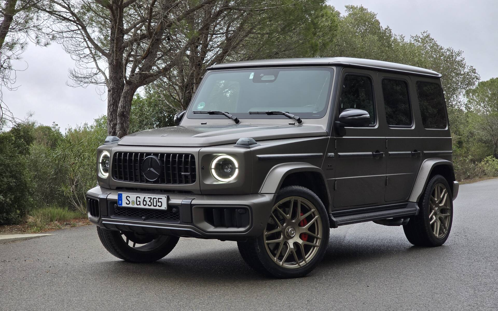
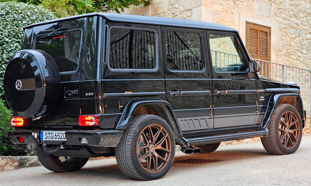
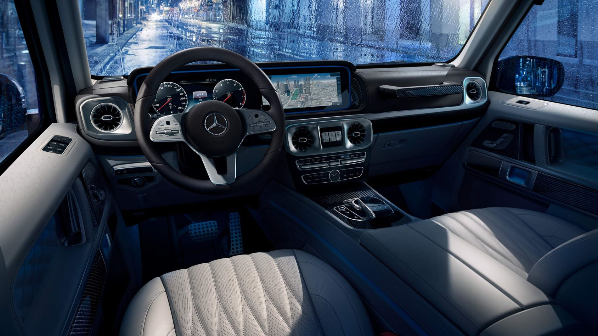

G-osztály




A Mercedes-Benz G-osztály, közismert nevén G-Wagen (Geländewagen, azaz terepjáró), egy luxus terepjáró modell, amelyet először 1979-ben mutattak be. Az autó eredetileg katonai és ipari felhasználásra készült, de mára a prémium terepjárók egyik ikonikus képviselője lett.
Főbb jellemzők:
- Robosztus felépítés: A G-osztály masszív, dobozos karosszériája és vázszerkezete révén kiváló terepjáró képességekkel rendelkezik.
- Luxus belső tér: A klasszikus megjelenés ellenére a belső tér rendkívül komfortos, modern technológiával és prémium anyagokkal felszerelt.
- Teljesítmény: Többféle motorral elérhető, például erős V8-as és V12-es benzines, illetve dízel változatokkal is. A G63 AMG változat különösen népszerű a sportos teljesítménye miatt.
- Négykerék-meghajtás: A G-osztály legendás terepjáró képességei a permanens összkerékhajtásnak, három differenciálzárnak és a nagy hasmagasságnak köszönhetők.
- Ikonikus dizájn: A modell külseje az évtizedek során alig változott, megőrizve jellegzetes, szögletes formáját és karakterét.
A Mercedes G-osztály egyszerre ötvözi a funkcionalitást, a terepjáró képességeket és a luxust, így népszerű választás mind városi, mind extrém körülmények között.